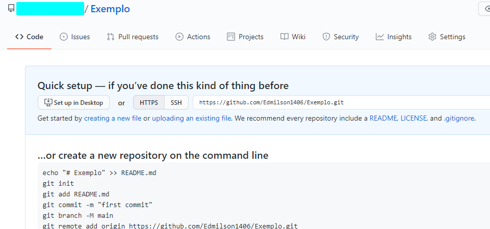

O GitHub permite a criação de repositórios para armazenamentos de
dados pessoais, não necessariamente um código, veja a seguir como é
simples a criação de um repositório:
-
- Abra o GitHub em
https://github.com/ e faça login
com a sua conta já criada.
-
- Na página inicial clique no botão "Novo repositório" ou "New
repository", em inglês.
-
- Nomeie seu repositório, e caso deseje, adicione uma descrição
sobre o mesmo.
-
- Pronto, seu repositório está criado, agora basta usá-lo como
desejar.
Veja na imagem a seguir como fica seu novo repósitorio assim que
criado:
